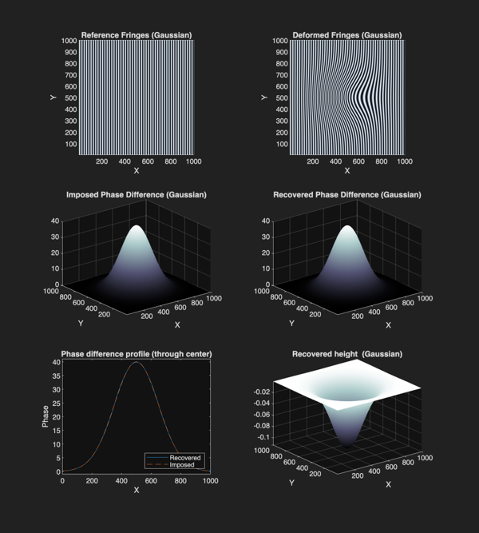
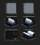

Contents
%-------------------------------------------------------------------------- % Script Name: ftp_example_synthetic.m % Author: Adam Anglart % Date: June 13, 2024 % Description: This script demonstrates the usage of the `ftpStart` % function for Fourier Transform Profilometry technique % by generating synthetic reference and deformed fringe patterns, % by imposing phase differences, and recovering these % differences with 'ftpStart' to consequently compute height profiles. % Two examples are provided: one featuring a Gaussian bell for a smooth % demonstration, and another showcasing a triangular prism % to highlight the technique's capability with sharp features. % % Inputs: None (parameters and synthetic data are generated within % the script) % Outputs: Plots of reference fringes, deformed fringes, imposed % phase differences, recovered phase differences, and % recovered height profiles for both Gaussian bell and % triangular prism examples. % % Notes: The parameters used for the phase to height relation % are based on typical values from water wave experiments. % The synthetic generation of fringes is for demonstration % purposes. %-------------------------------------------------------------------------- clc; clear; close all; addpath(fullfile(pwd, '..', 'src')); % Some parameters for synthetic generation of the fringes % (just for the sake of examples in this script) N = 1000; x = 1:N; y = 1:N; [X, Y] = meshgrid(x, y); k=2*pi/20; fringes = sin(k*X);
FILTERING
Parameters of the filtering for the FTP function (ftp_reconstruction) Try for example to play first with the parameter 'th' and see the difference in recovered phase difference You could plot each step in the FTP function during execution to understand what is happening
th=0.6; % width of the gaussian window ns=1; % 1 - Gaussian window, <1 - Tukey window
PHASE TO HEIGHT RELATION
Phase to height relation parameters - depend on the geometry of the setup here for parallel axis optical setup (paper -> DOI:10.1364/AO.48.000380) Some typical values from water wave experiments: (they do not mean much in this code since the images are generated synthetically)
w=1500; % periodicity of the fringes - depends largely on the camera setup/pixel size L=2; % distance camera/projector - surface (usually in [m]) D=0.5; % distance camera - projector (usually in [m])
Example 1: Gaussian bell
% Synthetic fringes % Gaussian bell centered at (500, 500) sigma = 150; center = [500, 500]; gaussian_bell = 40*exp(-((X-center(1)).^2 + (Y-center(2)).^2) / (2*sigma^2)); % Deformed fringes - imposing a phase difference deformed_fringes_gauss = sin(k*X + gaussian_bell); % STEP 1: Recover phase difference dphase_gauss = ftp_reconstruction(deformed_fringes_gauss, fringes, th, ns); % STEP 2: Phase to height relation recovered_height_gauss=L*dphase_gauss./(dphase_gauss-w*D); % Plot results for Gaussian bell figure('Position',[100 100 900 1000]); colormap bone subplot(3, 2, 1); pcolor(fringes); shading flat title('Reference Fringes (Gaussian)'); axis equal xlabel('X'); ylabel('Y'); xlim([1 N]); ylim([1 N]) subplot(3, 2, 2); pcolor(deformed_fringes_gauss); shading flat title('Deformed Fringes (Gaussian)'); axis equal xlabel('X'); ylabel('Y'); xlim([1 N]); ylim([1 N]) subplot(3, 2, 3); surf(gaussian_bell); shading interp title('Imposed Phase Difference (Gaussian)'); axis tight xlabel('X'); ylabel('Y'); zlim([0 40]) subplot(3, 2, 4); surf(dphase_gauss); shading interp title('Recovered Phase Difference (Gaussian)'); axis tight xlabel('X'); ylabel('Y'); zlim([0 40]) subplot(3, 2, 5); plot(dphase_gauss(500, :)); hold on; plot(gaussian_bell(500, :),'--'); title('Phase difference profile (through center)'); legend('Recovered', 'Imposed','Location','southeast'); xlabel('X'); ylabel('Phase'); ylim([-1 41]) subplot(3, 2, 6); surf(recovered_height_gauss); shading flat title('Recovered height (Gaussian)'); axis tight xlabel('X'); ylabel('Y'); saveas(gcf, 'ftp_example_synthetic_gaussian_bell.png', 'png');
Example 2: Triangular prism
% Synthetic fringes % Triangular prism along x axis triangular_prism = 30*max(0, 1 - abs(X - N/2) / (N/4)); % Deformed fringes - imposing a phase difference deformed_fringes_tri = sin(k*X + triangular_prism); % STEP 1: Recover phase difference dphase_tri = ftp_reconstruction(deformed_fringes_tri, fringes, th, ns); % STEP 2: Phase to height relation recovered_height_tri=L*dphase_tri./(dphase_tri-w*D); % Plot results for Triangular prism figure('Position',[100 100 900 1000]); colormap bone subplot(3, 2, 1); pcolor(fringes); shading flat title('Reference Fringes (Prism)'); axis equal xlabel('X'); ylabel('Y'); xlim([1 N]); ylim([1 N]) subplot(3, 2, 2); pcolor(deformed_fringes_tri); shading flat title('Deformed Fringes (Prism)'); axis equal xlabel('X'); ylabel('Y'); xlim([1 N]); ylim([1 N]) subplot(3, 2, 3); surf(triangular_prism); shading interp title('Imposed Phase Difference (Prism)'); axis tight xlabel('X'); ylabel('Y'); subplot(3, 2, 4); surf(dphase_tri); shading interp title('Recovered Phase Difference (Prism)'); axis tight xlabel('X'); ylabel('Y'); subplot(3, 2, 5); plot(dphase_tri(500, :)); hold on; plot(triangular_prism(500, :),'--'); title('Phase difference profile (through center)'); legend('Recovered', 'Imposed','Location','southeast'); xlabel('X'); ylabel('Phase'); ylim([-1 31]) inset_axes = axes('Position', [0.35, 0.24, 0.07, 0.07]); box on; plot(inset_axes, 475:525, dphase_tri(500, 475:525)); hold on; plot(inset_axes, 475:525, triangular_prism(500, 475:525),'--'); xlim(inset_axes, [475 525]); ylim(inset_axes, [26 31]); subplot(3, 2, 6); surf(recovered_height_tri); shading flat title('Recovered height (Prism)'); axis tight xlabel('X'); ylabel('Y'); zlim([-0.1 0.01]) saveas(gcf, 'ftp_example_synthetic_triangular_prism.png', 'png');